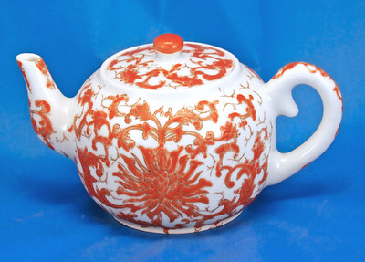

Teas have a very storied past. It all begins in a tea field in Southern India

"vb9086x-chrysanthemum-chinese-teapot" by Silk Road Collection is licensed under CC BY-NC-SA 2.0. To view a copy of this license, visit https://creativecommons.org/licenses/by-nc-sa/2.0/?ref=openverse.
Chinese teapots show intricate flowers and delicate colors